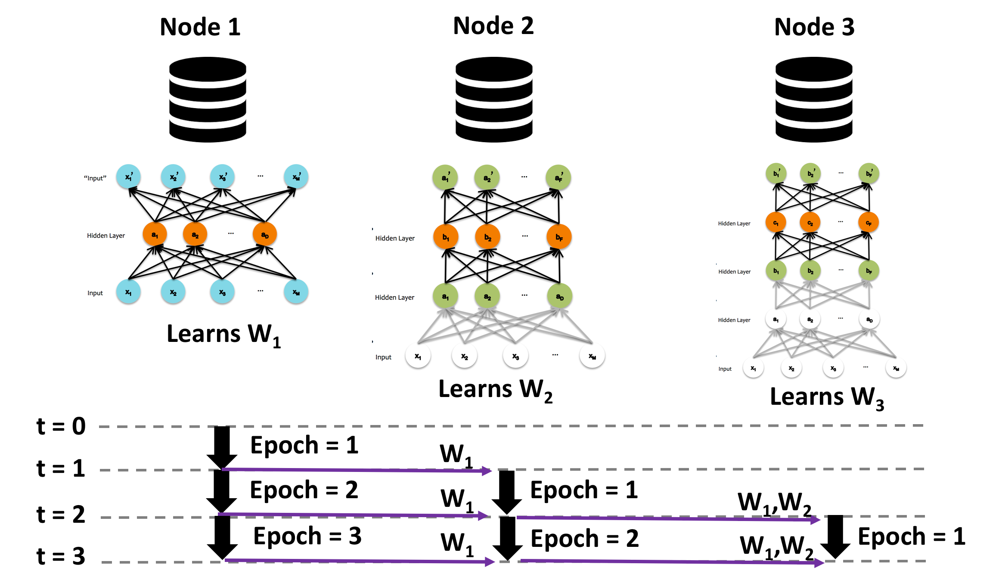
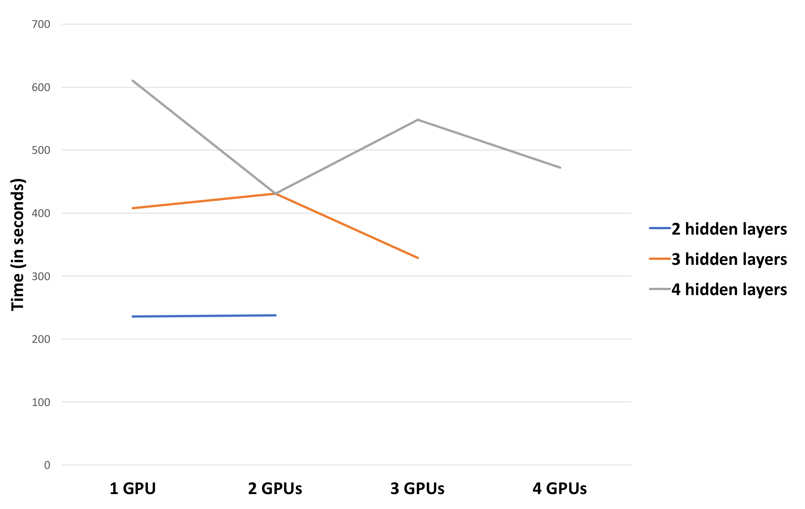
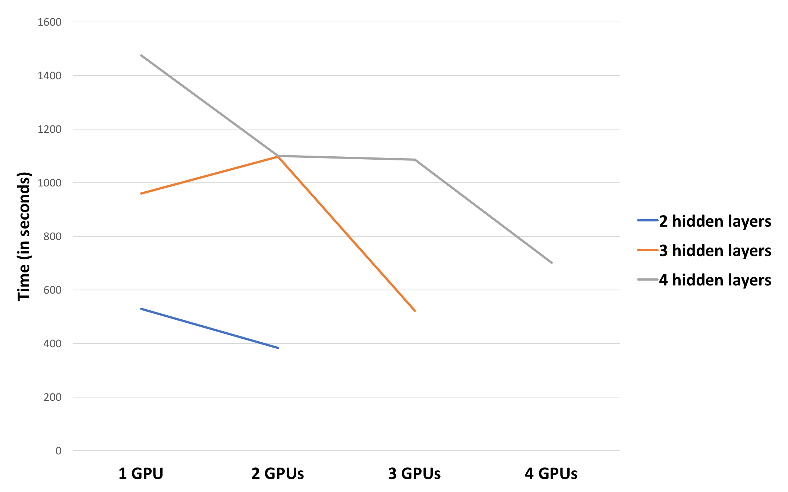
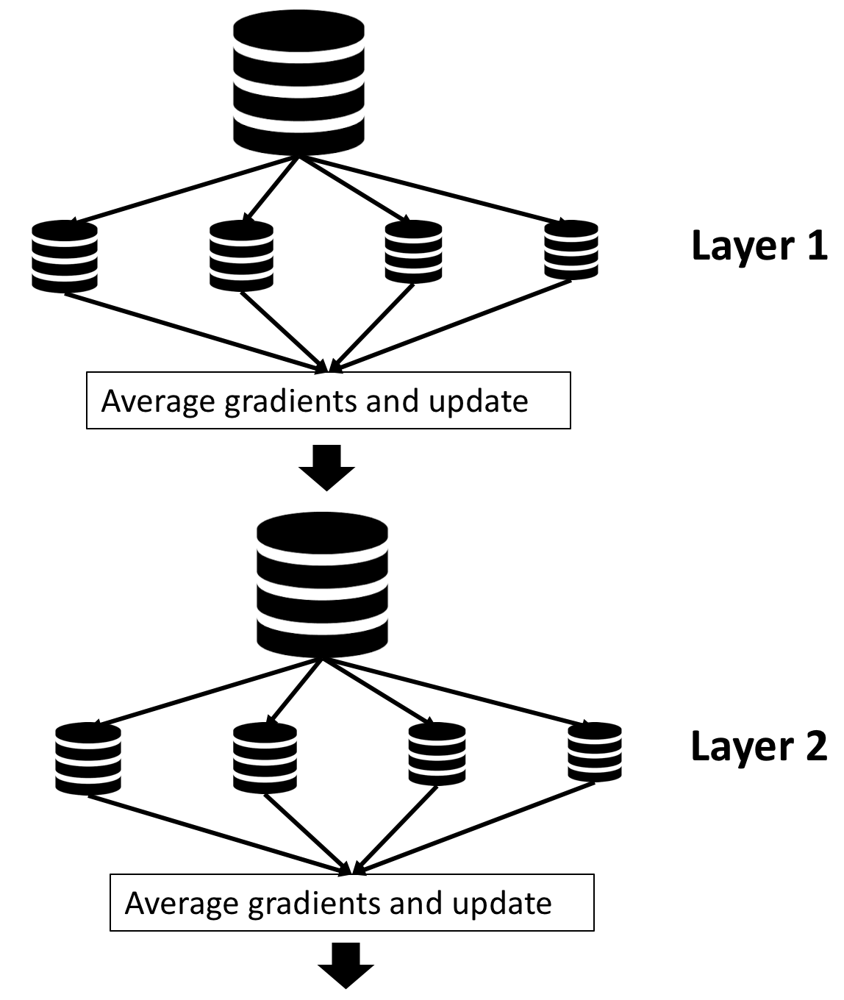
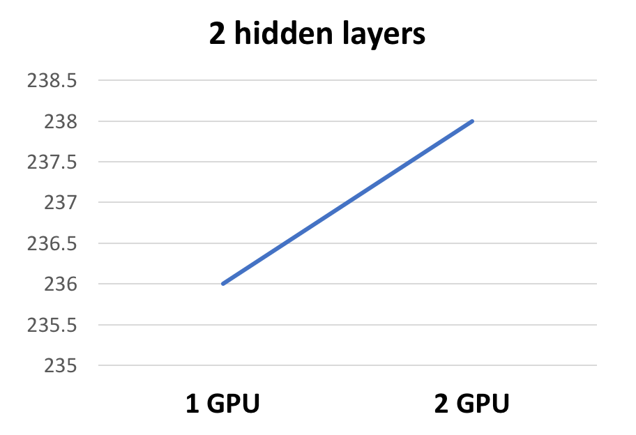
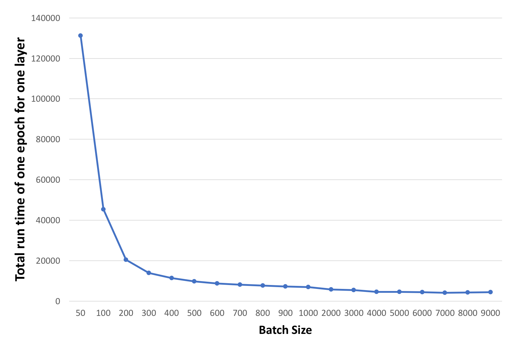
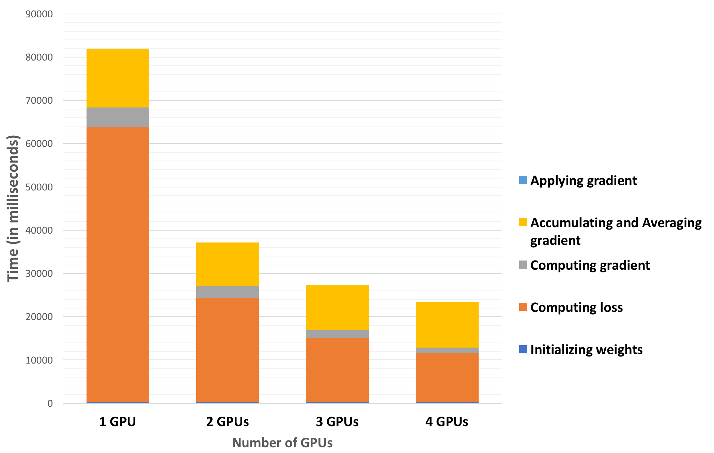
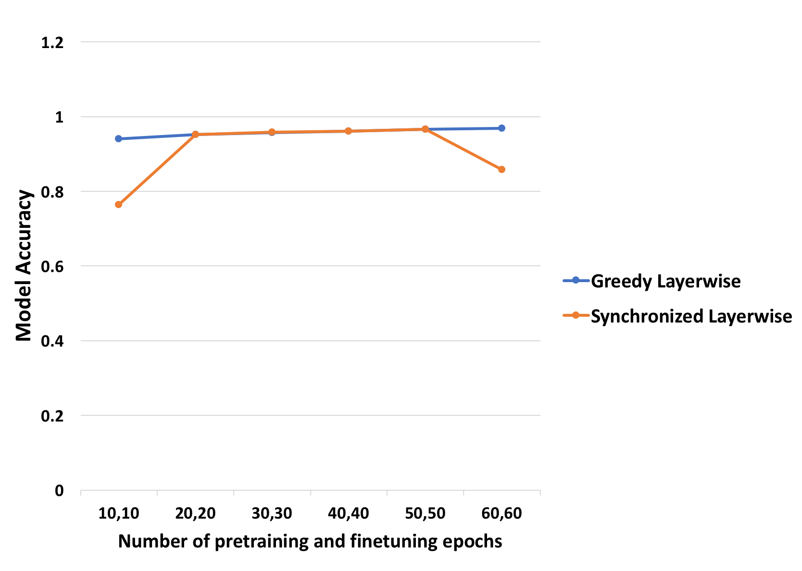
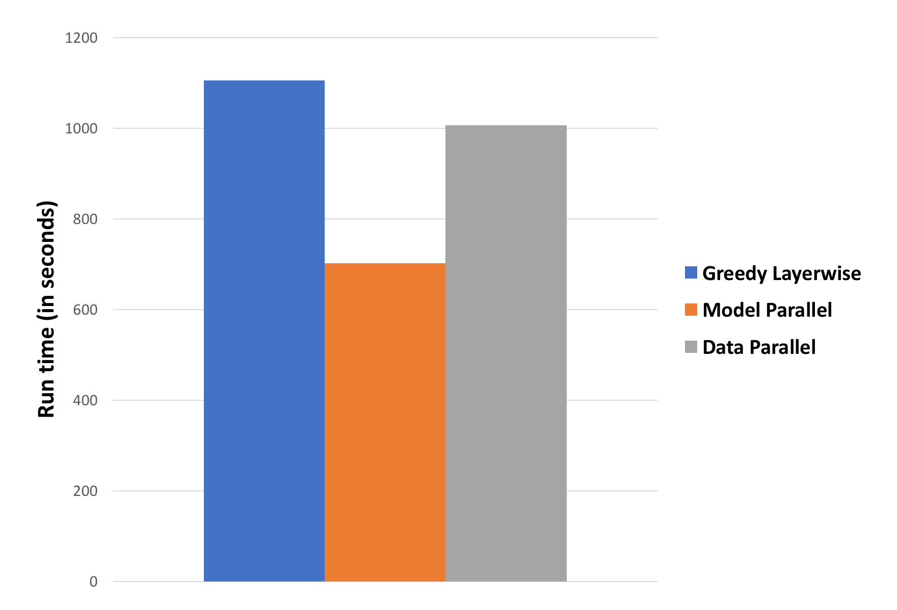

Parallelizing Pretraining of Deep Neural Networks using Stacked Autoencoders
Summary
- We implemented data parallel and model parallel approaches to pretraining a deep neural network using stacked autoencoders.
- We provide a generic optimized multi-GPU implementations of pretraining for both data parallel and model parallel approaches in Tensorflow.
- We analyze the performance and accuracy limitations of both approaches in comparison to greedy layerwise pretraining.
Experimental Setup
- For all experiments, we use AWS g2.8xlarge instance, which has 4 NVIDIA GRID K520 GPUs on the instance.
- We implemented the model with Tensorflow using Multi-GPU primitives.
- We use MNIST hand-written digit recognition dataset containing 55000 training images and 10 output labels.
What is pretraining a deep neural network?
Given a deep neural network, pretraining is a process where the weights of the network are learnt to provide a good starting point for training the network further. It helps pre-condition the network with a set of parameter values which effectively facilitates further supervised training.

 The traditional approach to pretraining the network uses greedy layer-wise pretraining. Figure 1 illustrates a deep neural network with 3 hidden layers. The greedy layer-wise pre-training works bottom-up in a deep neural network. The algorithm begins by training the first hidden layer using an autoencoder network minimizing the reconstruction error of the input. Once this layer has been trained, its parameters are fixed and the next layer is trained in a similar manner. The process is repeated until all the layers have been trained. This process is illustrated in Figure 2. The iterative nature of this process makes pre-training a relatively slow and time consuming process.
In this project, we parallelize this process in two ways - Model Parallel approach and Data Parallel approach. We use an implementation of greedy layer-wise pretraining in Tensorflow as our baseline.
The traditional approach to pretraining the network uses greedy layer-wise pretraining. Figure 1 illustrates a deep neural network with 3 hidden layers. The greedy layer-wise pre-training works bottom-up in a deep neural network. The algorithm begins by training the first hidden layer using an autoencoder network minimizing the reconstruction error of the input. Once this layer has been trained, its parameters are fixed and the next layer is trained in a similar manner. The process is repeated until all the layers have been trained. This process is illustrated in Figure 2. The iterative nature of this process makes pre-training a relatively slow and time consuming process.
In this project, we parallelize this process in two ways - Model Parallel approach and Data Parallel approach. We use an implementation of greedy layer-wise pretraining in Tensorflow as our baseline.
Baselines and Model Correctness checks
- We use greedy layerwise pretraining as our baseline for both the implementations.
- We verify the loss values after every epoch and every batch to understand how different models are training.
- We profile our code for every single op performed by Tensorflow. Since tensorflow profiling softwares are relative new, we run one op after another several times to get an estimate of time taken by every op in our code.
Model Parallel Approach
In model parallel approach, we train each layer of the network on different nodes with synchronization of previous layer weights. 
The above figure shows the overview of model parallel pretraining. The process begins by training the first layer using an autoencoder network for one epoch. This considers all the images in the training dataset batch-wise and learns weights for the first epoch. The learned weights are then sent to the next node, which sets these weights as fixed parameters and starts learning the weights of the second layer (first epoch of second layer). Meanwhile, the first node continues training the first layer's second epoch in parallel. This process is continued such that all layers are trained for a certain number of epochs in parallel with communication of weights between layers every epoch.
Constraints and Optimizations
- Our current implementation generalizes for any number of GPUs and any number of hidden layers. If the number of hidden layers (H) exceeds number of GPUs (G), then G hidden layers are trained in parallel for specified number of epochs after which their weights are fixed for next G hidden layers to be trained and so on.
- Communicating weights to the adjacent layers after every epoch: We tried minimizing the communication overhead by synchronization after a bunch of epochs. However, that would increase sequential part of training the first few layers. Since the number of epochs we were training is relatively small, this didn't help.
- We allow one full epoch to be trained before starting the next layer so that the input is seen by the previous layer weights once for providing a better starting point for the next layer.
What is the speed-up?
Pretraining for 30 epochs using a batch-size of 100 on a network with different number of hidden layers, each containing 2000 hidden units: 
Pretraining for 60 epochs using a batch-size of 5000 on a network with different number of hidden layers, each containing 2000 hidden units: 
Key Results and Observations
- We achieved 1.3x speedup for 4 layers on 4 GPUs and 1.24x speedup for 3 layers on 3 GPUs, when pretraining is done for 30 epochs with a batch-size of 100.
- Increasing the batch-size and number of epochs helps us achieve better speedup of 2.1x for 4 layers on 4 GPUs and 1.84x for 3 layers on 3 GPUs.
- Increasing number of epochs amortizes communication overhead.
- Profiling our code helped us understand that computing gradients and applying the update to the weights is a time consuming part of the pretraining process. Hence, higher batch-sizes reduces the number of times compute-and-apply gradient step occurs, thereby providing greater speed-up.
- The other interesting observation is that training 4 layers on 3 GPUs and 3 layers on 2 GPUs enforces one of the layers to be sequential, keeping the other GPUs idle. This results in poor speed-up for such configurations.
Data Parallel Approach
In data-parallel pretraining, the entire training dataset is split into smaller chunks and each GPU in the multi-GPU environment performs training on a chunk of this training data. In our implementation, we send a batch-size of data to every node and perform training on the batch. At the end of this, the gradients computed by all the GPUs are accumulated, averaged and applied to the corresponding weight parameters. These weights are then used by different nodes to perform the next set of batches in parallel. This process repeats layer-wise, just like in greedy layer-wise pretraining. Thus, the important overhead in this data-parallel approach is caused by the wide-dependency of synchronization and averaging of gradients and applying the weight updates at the end of processing the batch. The figure below illustrates the data parallel pretraining approach. 
Constraints and Optimizations
- We ensured we don't load the images for different GPUs individually. Instead we run the load operation once and use indexing into the image array for different towers in Tensorflow.
- We considered sending the entire chunk of training images corresponding to each GPU once and do gradient averaging after an epoch instead of after processing one batch on each GPU. We discarded this idea because the dataset could be very large for the chunk corresponding to each GPU to be processed together. Also, since the averaging process reduces accuracy, the smaller batch each GPU processes for averaging, the better the accuracy.
What is the speed-up?
Pretraining for 40 epochs using a batch-size of 5000 on a network with 4 hidden layers, each containing 2000 hidden units: 
- We observe near linear speedup on the number of GPUs in data parallel approach for an optimum batch size of 5000.
- In the data parallel approach, the gradients are accumulated and weights are updated after every node processes a batch-size of images each. Hence, if the batch-size is very small, then, the amount of communication and synchronization overhead due to wide-dependency nulls the parallelism benefit.
- Hence, there is an optimum batch-size which provided a linear speed-up.
The plot below shows the run-times of training one epoch of the data on 4 GPUs for one hidden layer using the data parallel approach for varying batch-sizes. 
- We observe that increasing batch-size helps speed up pretraining process until the data fits within GPU memory.
- The run time per epoch had an optimal value for a batch-size of 7000 images per batch, after which the run-time started increasing.
We then profiled our code to understand which operation consumes how much time. The results are shown in the graph below. 
- The time to accumulate gradients, average them and perform the weight update didn't scale with number of GPUs and remained constant for varying number of GPUs. This can be explained by the fact that there is a synchronization step at the end of processing a batch, which is a form of a wide dependency taking a constant time.
- Most of the time is spent in doing the forward and back-propagation and computing the gradients. This scales proportionately as the number of GPUs are increased.
Key Results
- We achieved a linear speed-up on number of GPUs, for an optimum batch-size of training images.
- The wide-dependency of synchronization and averaging weights does not scale with number of GPUs and remains constant.
Is Model Parallel approach better or Data Parallel approach better?
We compared the two approaches for an optimum batch-size of 7000 images per batch. We pretrained on two networks:
- Config 1: 4 hidden layers with 2000 hidden units on each layer.
- Config 2: 4 hidden layers with 2000, 1000, 500 and 100 hidden units on each layer.
For a good batch-size of 7000 images, data parallel approach performs better than model parallel approach for both uniform distribution of hidden units across layers and a skewed distribution of hidden units across layers.
But are accuracies still consistent with greedy layer-wise pretraining?
The plot below shows the model accuracy after pretraining and supervised finetuning for different number of epochs of pretraining and finetuning for both greedy layer-wise pretraining and model parallel pretraining. 
We observe that model parallel approach achieves around 96.62% similar to the greedy layer-wise pretraining. We conducted the same experiment using data parallel approach. The results are provided below.
- 30 epochs of pretraining, 30 epochs of finetuning gives an accuracy of 0.7472
- 60 epochs of pretraining, 60 epochs of finetuning gives an accuracy of 0.8162
For smaller batch-sizes, the accuracies will be higher but the run-times and speed-ups will be much lesser. Hence, there is a compromise between accuracy and speed-up for data parallel approach.
Does parallelism help?
Pretraining for 60 epochs using a batch-size of 5000 on a network with 4 hidden layers, each containing 2000 hidden units: This configuration provides reasonable accuracies on all three models. We achieve 1.6x speed-up for model parallel approach and 1.1x speed-up for data parallel approach.
Challenges
- Convergence of the model parallel and data parallel approaches might take more epochs than the traditional greedy layer-wise pretraining approach.
- Synchronization and communication overheads for both model parallel and data parallel approaches.
- Understanding the right model configuration and trade-off between parallelism and accuracy requires some amount of domain understanding.
- Implementation when number of layers to be trained exceeds number of active parallel units which can run concurrently in the given environment necessitates training a set of layers together followed by next set of layers in model parallel approach.
- Tensorflow limitations for profiling the code, obtaining fine-grained primitives and understanding under-the-hood optimizations to better enhance our implementation.
References
- Santara, Anirban, et al. "Faster learning of deep stacked autoencoders on multi-core systems using synchronized layer-wise pre-training." arXiv preprint arXiv:1603.02836 (2016).
- Bengio, Yoshua, et al. "Greedy layer-wise training of deep networks." Advances in neural information processing systems 19 (2007): 153.
- http://cmgreen.io/2016/01/04/tensorflow_deep_autoencoder.html - For greedy layerwise baseline